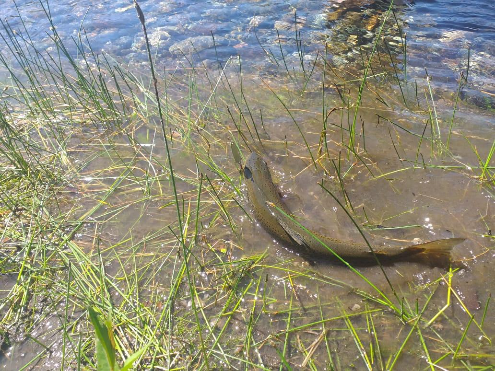

No aceptamos, ya que al ver el maltrato que hacía Jeremy Wade a los peces no era bueno y podíamos ser escrachados con ellos.
Decidimos ir a pescar río abajo, faltaba mucho tiempo para que pasara el siguiente colectivo, el río era bueno para sacar truchas grandes de hasta más de 10 kilos.
Llegando al puente vimos una trucha gigante en un pozón de 1 metro y medio. Jero le tiró con una mosca seca y picó. Estuvo más de dos minutos tratando de sacarla hasta que se le escapó. Pero Jero, en vez de enojarse, se motivó pensando que debía ser más grande de lo que se veía.
Estábamos pescando río abajo hasta que vimos una trucha grande, no menos de 10 kilos, entonces entre Ian y Jero le tiraron: Ian le tiró por encima y Jero a favor de la corriente, y así salió la primera. Le picó a Jero y con esa estuvo más de 5 minutos intentando sacarla, la trucha se le iba de un lado para otro, hasta que por fin salió.
Apenas salió la de Jero, Ian le tiró a la que él había visto. Pensó que era chica ya que estaba lejos, pero se dio cuenta que se estaba yendo río arriba entonces agarra y le tira a favor de la corriente. En ese momento pensó que no había picado e iba a tirar devuelta, pero, alzó la caña y la tanza ya estaba tensa. Se le empezó a ir hacia debajo de un árbol, entonces hizo un movimiento clave que logró que la trucha empezara a ir hacia él, y así sacó su trucha más grande.
Los chicos, al lograr capturar una trucha cada uno, se empezaron a volver hacia la parada de colectivo. Mientras esperaban, comieron lo que habían comprado, terminaron y lo vieron llegar.